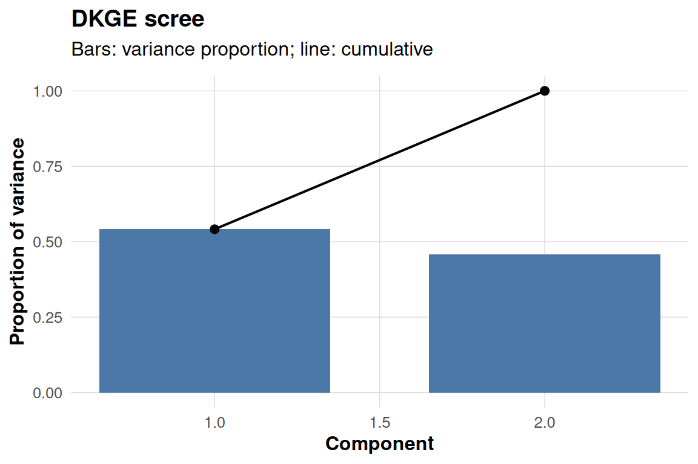

You have one GLM beta matrix per subject. Its rows are the same named design effects, but its columns may be different subject-specific clusters. You want to find effect-space directions that recur across subjects, inspect what those directions express, and evaluate a planned contrast without constructing a voxel-by-voxel group covariance matrix.
DKGE takes those beta matrices, their design matrices, and a design kernel. It returns a low-dimensional group basis in effect space plus subject-level cluster values that can be cross-fitted and, when coordinates are available, transported to a common parcellation.
Can you fit a complete example?
The package includes a simulator with known factorial structure. Here the planted signal involves two main effects in a 2 by 3 design. Each subject has a 5 by 20 beta matrix: five effect rows and twenty clusters.
toy <- dkge_sim_toy(
factors = list(condition = list(L = 2), load = list(L = 3)),
active_terms = c("condition", "load"),
S = 5, P = 20, snr = 5, seed = 42
)
dim(toy$B_list[[1]])
#> [1] 5 20The three objects needed for a first fit are toy$B_list
(subject beta matrices), toy$X_list (matching design
rulers), and toy$K (the effect-space kernel). Fit two
components:
fit <- dkge(toy$B_list, toy$X_list, K = toy$K, rank = 2)
dkge_plot_scree(fit)
The bars show each retained component’s share of the fitted q-space variation; the line is cumulative. This is a descriptive summary of the fitted latent space, not a significance test.
What does a component express?
Inspect the design-weighted saliences, , before mapping anything back to space. Rows are effects and columns are components.
round(dkge_component_saliences(fit, comps = 1:2, long = FALSE), 2)
#> LV1 LV2
#> condition 0.81 -0.06
#> load1 0.04 0.58
#> load2 0.01 0.01
#> condition:load1 0.00 0.00
#> condition:load2 0.00 0.00Large positive and negative entries identify the effect directions associated with each component. Component signs are arbitrary, so interpret relative patterns rather than treating the sign itself as scientifically meaningful.
Next operation: use
dkge_plot_effect_loadings(fit) for a heatmap, or move to a
prespecified effect contrast.
How do you evaluate a contrast without reusing each subject’s data?
Construct a contrast in the same effect order as the fit. The
simulator records which effect coordinate carries the planted
condition term.
condition_contrast <- numeric(nrow(toy$K))
condition_contrast[toy$active_cols$condition] <- 1
condition_loso <- dkge_contrast(
fit, list(condition = condition_contrast), method = "loso"
)
condition_loso
#> DKGE Contrasts
#> --------------
#> Method: loso
#> Contrasts: 1
#> Subjects: 5
#> Contrast names: conditionmethod = "loso" refits the latent basis without each
held-out subject before computing that subject’s cluster values. The
result contains one vector per subject under
condition_loso$values$condition; those vectors still live
on the subjects’ own cluster systems.
Cross-fitting limits basis-reuse optimism; it does not by itself provide a population p-value, spatial multiplicity correction, or causal interpretation. Those require an inference procedure matched to the claim and an experimental design that supports the interpretation.
Next operation: if clusters differ across subjects,
transport the contrast with
dkge_transport_contrasts_to_medoid(). If they already share
a common index, as.matrix(condition_loso) stacks them
directly.
What must your real data look like?
For subject , supply:
- a numeric
qbyP_sbeta matrix, where rows are named effects and columns are clusters, parcels, or voxels; - a numeric
T_sbyqdesign matrix whose column names match the beta-row names; and - optionally, cluster weights, coordinates, effect counts, or trial-level sufficient statistics needed by later stages.
Wrap subjects with dkge_subject() when you want
validation and provenance, then combine them with
dkge_data(). Subjects may have different P_s.
If some effects are unobserved, declare that explicitly; DKGE records
coverage and does not treat an absent effect as an observed zero.
subjects <- Map(
function(beta, design, id) dkge_subject(beta, design = design, id = id),
toy$B_list, toy$X_list, toy$subject_ids
)
data_bundle <- dkge_data(subjects)
c(subjects = length(data_bundle$subject_ids), effects = data_bundle$q)
#> subjects effects
#> 5 5For unequal trial counts or missing design cells, continue with
vignette("dkge-partial-effect-spaces") before fitting.
Which page should you read next?
The default path is:
-
vignette("dkge-workflow")— take the same objects through fit, comparison, cross-fitted contrast, and spatial transport. -
vignette("dkge-concepts")— understand the kernel metric, the fitted moment, and the distinct levels of inference. -
vignette("dkge-design-kernels")— construct a kernel for your own design. -
vignette("dkge-contrasts-inference")— choose uncertainty and testing machinery for a prespecified contrast.
Common branches are
vignette("dkge-partial-effect-spaces") for incomplete or
unequally estimated effects, vignette("dkge-weighting") for
weighting estimands, and vignette("dkge-plotting") for
presentation.
For function-level help, start with ?dkge,
?dkge_subject, ?design_kernel, and
?dkge_contrast.